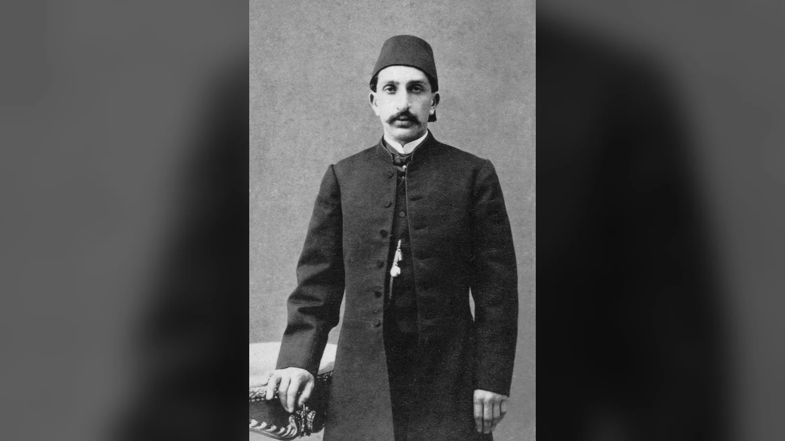
II. Abdülhamid, Osmanlı Devleti’nin 34. padişahıdır. 21 Eylül 1842’de İstanbul’da doğdu, 31 Ağustos 1876’da tahta çıktı ve 27 Nisan 1909’da tahttan indirildi. Yaklaşık otuz üç yıllık saltanatı; ilk Osmanlı anayasasının ilanından meclisin kapatılmasına, 1877-1878 Osmanlı-Rus Savaşı’ndan büyük toprak kayıplarına, eğitim ve demiryolu yatırımlarından sansür ve jurnal sistemine kadar birbirine zıt görünen gelişmeleri aynı dönemde barındırdı.
Bugün II. Abdülhamid hakkında konuşurken yalnız 1876–1909 arasındaki hükümdarı konuşmuyoruz. Jön Türk muhalefetinin “istibdat” anlatısı, Avrupa basınındaki “Kızıl Sultan” imgesi, Cumhuriyet dönemindeki değerlendirmeler, Necip Fazıl Kısakürek’le yaygınlaşan “Ulu Hakan” söylemi ve son yıllarda Payitaht Abdülhamid dizisinin oluşturduğu popüler karakter tarihsel hükümdarın üzerine farklı katmanlar ekledi. Aynı kişi bir anlatıda imparatorluğu tek başına ayakta tutan siyasi deha, diğerinde devletin bütün sorunlarının sorumlusu olarak gösterilebiliyor.
Kaynakların ortaya çıkardığı Abdülhamid bu iki portreden de daha karmaşık. Meclisi kapattı, basını sıkı denetim altında tuttu ve muhaliflerini sürgüne gönderdi; aynı yönetim döneminde okul ağı genişledi, telgraf ve demiryolları devletin uzak bölgelerine ulaştı, hastaneler ve sosyal kurumlar açıldı. Büyük toprak kayıpları onun saltanatında gerçekleşti; buna karşılık Avrupa güçleri arasındaki rekabeti kullanarak yeni bir büyük savaştan uzun süre kaçınmaya çalıştı. Filistin’de Siyonist siyasi hedeflere karşı çıktı; fakat ona atfedilen bazı meşhur sözlerin güvenilir çağdaş kaynağı yok. Tarihsel Abdülhamid’i anlamanın yolu, başarı ve baskıyı birbirini iptal eden iki ayrı dosya gibi değil, aynı yönetim sisteminin parçaları olarak incelemekten geçiyor.
II. Abdülhamid Kimdir?
Abdülhamid, Sultan Abdülmecid ile Tîrimüjgân Kadınefendi’nin oğluydu. On bir yaşındayken annesini kaybetti; çocuğu olmayan Piristû Kadınefendi onun yetişmesinde annelik rolü üstlendi. Saray eğitimi içinde Türkçe, Arapça, Farsça, Osmanlı tarihi, Fransızca ve müzik dersleri aldı. Marangozluğa ilgisi sonradan uydurulmuş bir saray efsanesi değildir; şehzadeliğinden itibaren bu işle uğraştığı, Yıldız Sarayı’ndaki marangozhaneyi kullandığı bilinir.
Taht için ilk sıradaki şehzadelerden biri olmadığı yıllarda Maslak’taki çiftliğiyle ilgilendi, tarım ve ticari faaliyetleri takip etti. Amcası Sultan Abdülaziz’in 1867 Avrupa seyahatine katılması, ona Paris ve Londra gibi Avrupa başkentlerini görme fırsatı verdi. Bu geziyi “Avrupa’nın bütün sırlarını çözdü” türü sonradan kurulmuş bir deha hikâyesine çevirmek gereksizdir; fakat Osmanlı hanedanından bir şehzadenin sanayi, ulaşım ve saray dünyasını yerinde görmesi dikkate değer bir deneyimdi.
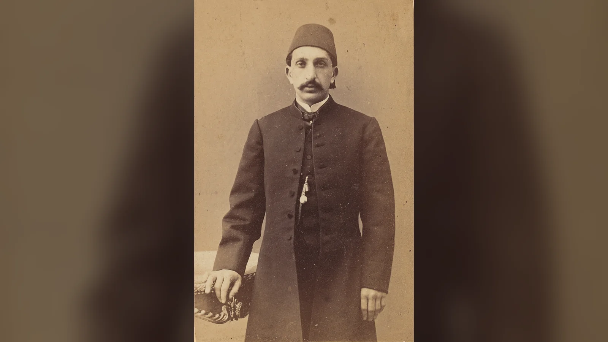
1876’ya gelindiğinde imparatorluk ağır bir mali ve siyasi kriz içindeydi. Balkan isyanları, Avrupa devletlerinin baskısı, 1875’te ilan edilen mali moratoryum ve saray çevresindeki iktidar mücadelesi Abdülaziz’in tahtını sarstı. Abdülaziz Mayıs 1876’da indirildi ve birkaç gün sonra öldü. Yerine V. Murad geçti; fakat sağlık sorunları nedeniyle yalnız üç ay tahtta kalabildi. Abdülhamid böyle bir ortamda, meşrutiyet ve anayasa tartışmalarının merkezinde tahta çıktı.
Saltanatının uzunluğu sıkça “33 yıl” diye verilir. 31 Ağustos 1876’dan 27 Nisan 1909’a kadar geçen kesin süre otuz üç tam yıl değildir; yaklaşık otuz iki yıl sekiz aydır. “33 yıllık saltanat” tarih yazımında ve popüler kullanımda yerleşmiş yuvarlak bir ifadedir.
II. Abdülhamid Nasıl Tahta Çıktı?
1876, Osmanlı hanedanı açısından olağanüstü bir yıldı. Abdülaziz’in tahttan indirilmesi, V. Murad’ın kısa saltanatı ve Abdülhamid’in hükümdarlığı birkaç ay içinde birbirini izledi. Bu hızlı değişimin arkasında yalnız saray entrikaları değil, devletin geleceğinin nasıl kurtarılacağı konusunda bürokratlar arasındaki ciddi görüş ayrılıkları vardı.
Midhat Paşa ve anayasal yönetim isteyen çevreler, Avrupa devletlerinin Osmanlı iç işlerine müdahalesini azaltmanın ve devlet yönetimini düzene sokmanın yollarından birini anayasa ve temsilî mecliste görüyordu. Abdülhamid’in tahta çıkmadan önce meşrutiyet fikrine ne ölçüde içtenlikle bağlı olduğu tartışmalıdır. Hatıratlar, tarafların karşılıklı güvenceler verdiğini aktarır; fakat bunları modern anlamda imzalanmış ayrıntılı bir “taht sözleşmesi” gibi sunmak doğru olmaz.
23 Aralık 1876’da Kanun-ı Esasi ilan edildi. Böylece Osmanlı tarihinde ilk kez yazılı bir anayasa yürürlüğe girdi. Anayasa padişahın yetkilerini tamamen sembolik hâle getirmiyordu. Hükümdar hükümeti atıyor, Meclis-i Umumi’yi toplantıya çağırabiliyor ve feshedebiliyor, ayrıca 113. madde kapsamında devlet güvenliği açısından tehlikeli gördüğü kişileri sürgüne gönderebiliyordu. Abdülhamid kısa süre sonra Midhat Paşa’yı bu yetki çerçevesinde ülke dışına gönderdi.
Bu başlangıç, daha sonra oluşan iki zıt anlatıyı da zorlaştırır. Abdülhamid “anayasayı tek başına halka armağan eden liberal hükümdar” değildi; anayasa güçlü bir siyasi hareketin ve kriz ortamının sonucuydu. Buna karşılık anayasal düzen onun iradesi dışında birkaç saatliğine ilan edilmiş önemsiz bir kâğıt da değildi. Padişah anayasayı onayladı ve ilk Osmanlı parlamentosu onun saltanatında toplandı.
II. Abdülhamid Meclisi Neden Kapattı?
Meclis-i Mebusan 1877’de çalışmaya başladığında devlet çok geçmeden Rusya ile savaşa girdi. 1877-1878 Osmanlı-Rus Savaşı, Osmanlı tarihindeki adıyla 93 Harbi, hem askerî hem siyasi felaket yarattı. Rus orduları Balkanlar üzerinden İstanbul yakınlarına kadar ilerledi; Kafkas cephesinde de Osmanlı toprakları kaybedildi. Yüz binlerce Müslüman muhacir imparatorluğun iç bölgelerine doğru hareket etti.
Mecliste savaşın yürütülmesi ve hükümetin sorumluluğu konusunda sert eleştiriler yükseldi. Abdülhamid 13 Şubat 1878’de parlamentoyu süresiz biçimde tatil etti. Buradaki teknik ayrıntı önemlidir: Kanun-ı Esasi resmen tamamen yürürlükten kaldırılmadı, fakat parlamento otuz yıl boyunca yeniden toplanmadığı için anayasal temsil sistemi fiilen işlemez hâle geldi. 1908’de II. Meşrutiyet ilan edildiğinde yeni bir anayasa yazılmasından çok Kanun-ı Esasi’nin yeniden işler hâle getirilmesi söz konusuydu.
Kararı yalnız “savaş şartları mecbur bıraktı” diye açıklamak yetersizdir. Savaş gerçek bir devlet kriziydi ve meclisteki tartışmalar padişahın yönetim anlayışıyla çatışıyordu. Fakat Abdülhamid sonraki otuz yıl boyunca parlamentoyu yeniden açmadı ve iktidarı Yıldız Sarayı çevresinde merkezileştirdi. Geçici savaş tedbiri kalıcı yönetim biçimine dönüştü.
Bunun karşısında “meclisi kapattığı anda bütün devlet kurumlarını ortadan kaldırdı” demek de yanlış olur. Bürokrasi, nezaretler, vilayet yönetimleri ve hukuk kurumları çalışmaya devam etti. Abdülhamid’in sistemi modern devlet bürokrasisini yok etmekten çok, onu sarayın daha sıkı gözetimine bağlamaya çalıştı.
İstibdat Dönemi Gerçekte Nasıldı?
“İstibdat”, keyfî ve baskıcı yönetim anlamına gelen bir kelimeydi ve özellikle Abdülhamid muhaliflerinin 1878 sonrasındaki rejimi tanımlamak için kullandığı güçlü bir siyasi kavrama dönüştü. İttihatçı ve Jön Türk literatürünün etkisiyle II. Meşrutiyet sonrasında dönemin neredeyse resmî adı hâline geldi. Kelimenin muhalif kökeni, dönemde baskı olmadığı anlamına gelmez.
Basın üzerinde önleyici sansür uygulanıyordu. Gazete ve kitaplar yayımlanmadan önce denetlenebiliyor, siyasi açıdan sakıncalı görülen yayınlara müdahale ediliyordu. Yurt dışındaki muhalif gazetelerin imparatorluğa sokulması engellenmeye çalışılıyor, yazarlar ve memurlar siyasi faaliyetleri nedeniyle sürgüne gönderilebiliyordu. Yıldız Sarayı’na ulaşan jurnaller, padişahın çevresindeki güvenlik sisteminin önemli parçalarından biriydi.
Popüler anlatı burada bazen karikatüre dönüşür. “Burun” kelimesinin Abdülhamid’in burnu nedeniyle tamamen yasaklandığı, bütün sözlüklerden çıkarıldığı veya belirli gündelik kelimelerin kullanılmasının suç sayıldığı gibi hikâyeler tekrar edilir. Sansür kurulları gerçekten çok geniş ve zaman zaman absürt görünen müdahalelerde bulundu; ancak her meşhur yasak hikâyesi aynı belge gücüne sahip değildir. Dönemin sansürünü göstermek için doğrulanmamış anekdotlara ihtiyaç yoktur.
Sansürün mantığı yalnız padişahın kişisel hassasiyetlerinden doğmuyordu. Hanedan devrilmeleri, Balkan milliyetçilikleri, anarşist hareketler, Ermeni devrimci örgütleri, Jön Türk muhalefeti ve Avrupa devletlerinin müdahaleleri sarayda sürekli bir güvenlik kaygısı oluşturuyordu. Sorun, bu gerçek tehditlerin siyasi muhalefetin geniş kesimlerini gözetim altında tutmayı meşrulaştıran bir sisteme dönüşmesiydi.
Hafiye ve jurnal sistemi ne kadar güçlüydü?
Abdülhamid dönemi istihbaratı, Payitaht Abdülhamid gibi yapımlarda modern bir gizli servis gibi resmedilebilir. Tarihsel yapı bundan daha dağınıktı. Saraya bağlı görevliler, polis teşkilatı, elçiliklerden gelen bilgiler, valiler, memurlar ve gönüllü jurnal yazarları farklı kanallardan Yıldız’a rapor gönderiyordu. Bunların hepsini tek komuta merkezinden çalışan bugünkü istihbarat teşkilatı gibi düşünmek anakronik olur.
Jurnal sistemi bir başka sorun yarattı: hükümdara ulaşan her ihbar doğru değildi. Kişisel hesaplaşmalar, terfi beklentileri ve rakiplerini suçlama girişimleri de jurnallere yansıyabiliyordu. Saray bu nedenle çok miktarda bilgi topluyor fakat aynı zamanda bilginin güvenilirliğini ayıklamak zorunda kalıyordu.
Abdülhamid’in yönetim anlayışındaki temel çelişkilerden biri burada görülür. Devlet hakkında daha fazla bilgi toplamak merkezî kapasiteyi artırıyordu; fakat kararların giderek sarayda toplanması bürokratik süreçlere duyulan güvensizliği de büyütüyordu. Modernleşen haberleşme teknolojisi böylece hem devlet hizmetlerini hızlandırdı hem gözetim kapasitesini genişletti.
Yıldız Sarayı Neden Yönetimin Merkezine Dönüştü?
Abdülhamid’in Dolmabahçe yerine Yıldız Sarayı’nı tercih etmesi de yönetim tarzıyla ilişkilidir. Yıldız, tek bir saray binasından çok köşkler, bürolar, atölyeler, bahçeler ve güvenlik alanlarından oluşan geniş bir kompleksti. Padişah burada mâbeyn teşkilatı üzerinden devlet adamlarıyla doğrudan temas kurabiliyor, kendisine ulaşan raporları takip edebiliyor ve resmî bürokrasinin yanında saraya bağlı ayrı bilgi kanallarını kullanabiliyordu.
Bu düzen zamanla sadrazamlık ve nezaretlerin geleneksel karar alanının bir bölümünü saraya çekti. Abdülhamid’in her evrakı tek başına okuduğu veya imparatorluğun her ayrıntısını bizzat yönettiği şeklindeki popüler anlatılar abartılıdır; buna karşılık Yıldız’ın önceki dönemlere kıyasla çok güçlü bir siyasi merkez hâline geldiği açıktır. Saray bürokrasisinin büyümesi, hükümdarın memurlar ve vilayetler üzerinde daha doğrudan denetim kurma arzusuyla bağlantılıydı.
Yıldız aynı zamanda rejimin güvenlik kaygısının fiziksel mekânıydı. Abdülaziz’in tahttan indirilmesi, V. Murad’ı yeniden tahta çıkarma girişimleri ve hükümdara yönelik suikast korkusu Abdülhamid’in saray çevresindeki güvenlik önlemlerini artırdı. Bu kaygıların gerçek tarihsel nedenleri vardı; fakat güvenlik mantığı giderek siyasi muhalefetin geniş kesimlerini de kapsayan gözetim düzeniyle birleşti. Abdülhamid dönemini değerlendirirken kişisel korku ile kurumsal merkezîleşmeyi birbirinden tamamen ayırmak bu nedenle kolay değildir.
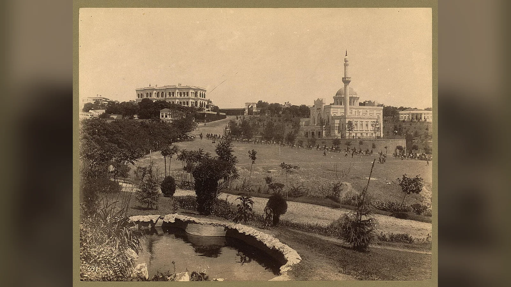
Eğitim, Demiryolları ve Modernleşme
Abdülhamid döneminin en görünür miraslarından biri eğitim ağındaki genişlemedir. Rüştiyeler, idadiler, öğretmen okulları ve meslek okulları imparatorluğun farklı bölgelerine yayıldı. Mekteb-i Mülkiye ve hukuk eğitimi gibi Tanzimat döneminde temelleri atılan kurumlar geliştirildi. Bu nedenle “Osmanlı’daki modern eğitimi Abdülhamid başlattı” demek doğru değildir; fakat onun saltanatında eğitim ağının taşraya yayılması belirgin biçimde hızlandı.
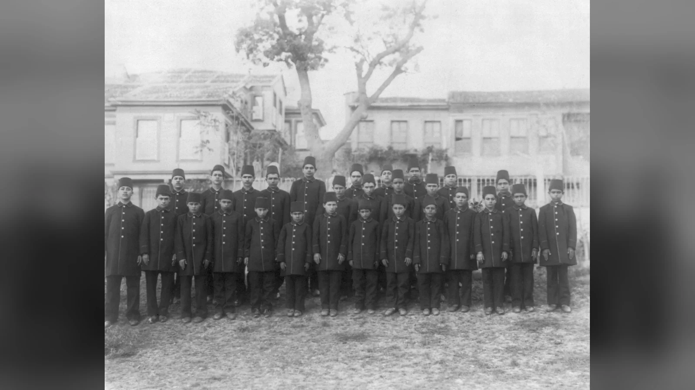
Okulların amacı yalnız bilgi vermek değildi. Merkezî devlet, ortak bir müfredat ve memur yetiştirme sistemi aracılığıyla vilayetlerle İstanbul arasındaki bağı güçlendirmek istiyordu. Selim Deringil’in çalışmaları, eğitim, törenler, semboller ve halifelik vurgusunun Abdülhamid yönetiminde meşruiyet üretme araçları olduğunu gösterir. Modern okul ile otoriter merkezîleşme birbirinin zıddı değildi; aynı devlet projesinin iki yüzü olabiliyordu.
Sağlık ve sosyal yardım alanında da yeni kurumlar ortaya çıktı. Darülaceze 1890’larda İstanbul’un yoksul, yaşlı ve kimsesiz nüfusu için kuruldu. Hamidiye Etfal Hastanesi, padişahın küçük yaşta ölen kızı Hatice Sultan’ın ardından çocuk hastanesi olarak açıldı. Bu kurumların hayırseverlik boyutu kadar modern devletin sosyal alandaki görünürlüğünü artıran yönü de vardı.
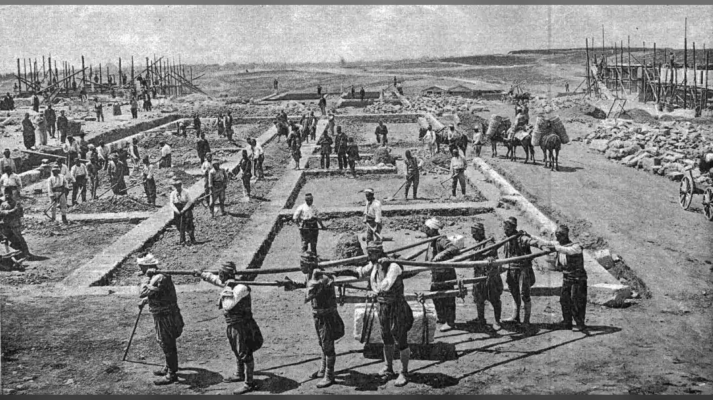
Telgraf hatlarının genişlemesi, vilayetlerle merkez arasındaki iletişim süresini dramatik biçimde kısalttı. Demiryolları askerî sevkiyat, ticaret ve idare için kullanıldı. Anadolu demiryolu projeleri Alman sermayesi ve dış politika ilişkileriyle bağlantılıydı. Daha sonra Bağdat’a uzanacak hat, Osmanlı-Alman yakınlaşmasının en önemli ekonomik projelerinden biri hâline geldi.
Hicaz Demiryolu ise Abdülhamid döneminin en sembolik girişimiydi. 1900’de başlayan hat 1908’de Medine’ye ulaştı. Proje hac yolculuğunu kolaylaştırıyor, Şam-Hicaz arasındaki askerî ve idarî ulaşımı güçlendiriyor ve İslam dünyasından toplanan bağışlarla halifelik siyasetinin görünür bir simgesine dönüşüyordu. Tek bir açıklama yeterli değildir: dinî prestij, ulaşım modernleşmesi ve merkezî denetim aynı ray üzerinde buluşmuştu.
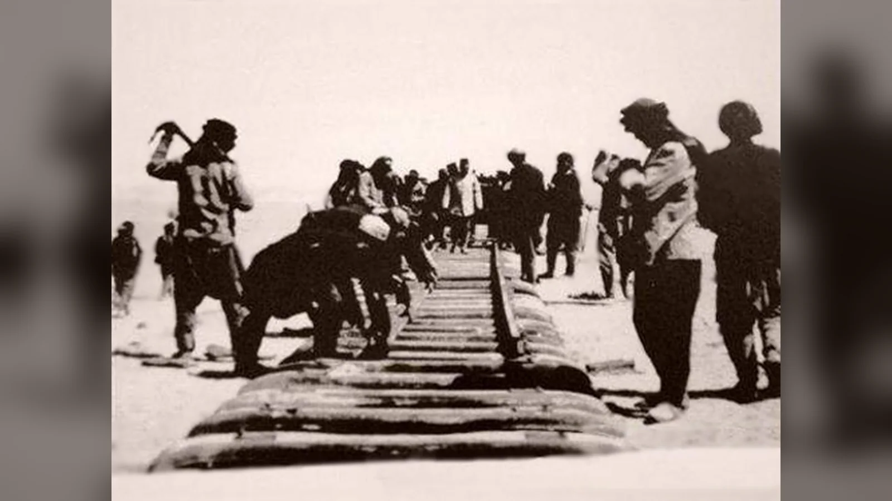
Fotoğrafı neden bu kadar önemsiyordu?
Abdülhamid’in fotoğraf merakı da belgelenmiş bir olgudur. Library of Congress’te bulunan ve padişahın 1893-1894 civarında Amerika’ya gönderdiği koleksiyon 51 albümde 1.819 fotoğraf içerir. Abdullah Frères, Sébah & Joaillier ve başka fotoğrafçılar tarafından çekilen görüntüler okulları, hastaneleri, fabrikaları, askerî tesisleri, şehirleri ve tarihî yapıları gösterir.
Bu albümler yalnız kişisel koleksiyonculuk ürünü değildi. İmparatorluğun Batılı kamuoyuna modern kurumlarıyla gösterilmesi amaçlanıyordu. Fotoğraf burada propaganda kelimesinin kaba anlamından daha incelikli bir işlev görür: devlet kendisini nasıl görmek ve nasıl göstermek istediğini seçiyordu. Albümlerdeki modern okullar ve hastaneler gerçektir; fakat seçilen görüntüler imparatorluğun bütün sosyal gerçekliğinin tarafsız fotoğrafik özeti değildir.
Panislamizm Abdülhamid’in Ana Politikası mıydı?
Abdülhamid halifelik unvanını önceki birçok Osmanlı padişahından daha görünür bir siyasi araç olarak kullandı. 1877-1878 savaşından sonra imparatorluğun Hristiyan nüfusunun önemli bir bölümü yeni ulus devletlerin sınırlarında kalırken Müslüman nüfusun oranı arttı. Balkanlar ve Kafkasya’dan gelen Müslüman muhacirler de devletin toplumsal yapısını değiştirdi.
Bu ortamda padişahın Müslüman tebaayla ve sömürge yönetimleri altındaki Müslüman topluluklarla kurduğu sembolik ilişkiler önem kazandı. Hicaz Demiryolu, hac organizasyonu, dinî kurumlara destek ve padişahın halife kimliğinin vurgulanması bu politikanın parçalarıydı. Avrupa devletleri de kendi Müslüman sömürgeleri nedeniyle Osmanlı halifesinin etkisini dikkatle izliyordu.
“Panislamizm” kavramı yine de Abdülhamid’in bütün dış politikasını açıklayan anahtar değildir. Padişah aynı anda Almanya, Britanya, Rusya ve Fransa arasında diplomatik denge kurmaya çalışıyor; gayrimüslim tebaayı yönetiyor ve Tanzimat’tan miras kalan Osmanlı kurumlarını kullanıyordu. İslam birliği söylemi güçlüydü, fakat imparatorluğun diplomatik ve idarî gerçekliği tek bir ideolojiye indirgenemeyecek kadar karmaşıktı.
II. Abdülhamid Döneminde Osmanlı Toprak Kaybetti mi?
Evet. “II. Abdülhamid 33 yıl boyunca bir karış toprak kaybetmedi” iddiası tarihsel olarak savunulamaz. Fakat bütün kayıpları aynı hukuki kategoriye koymak da tabloyu bozar.
Saltanatının başındaki 1877-1878 Osmanlı-Rus Savaşı en büyük kırılmayı yarattı. Berlin Antlaşması’yla Sırbistan, Karadağ ve Romanya’nın bağımsızlığı uluslararası düzeyde tanındı. Bulgaristan özerk bir prenslik hâline geldi; Doğu Rumeli ayrı bir statü kazandı. Kars, Ardahan ve Batum Rusya’ya bırakıldı. Bosna-Hersek hukuken Osmanlı egemenliği altında kalmakla birlikte Avusturya-Macaristan tarafından işgal ve idare edildi.
Kıbrıs 1878’de yapılan düzenlemeyle Britanya yönetimine bırakıldı; hukuki egemenlik meselesi daha karmaşık olmakla birlikte Osmanlı fiilî yönetimi sona erdi. Fransa 1881’de Tunus’u işgal ederek himaye rejimi kurdu. Britanya 1882’de Mısır’ı işgal etti. Mısır hukuken Osmanlı Devleti’ne bağlı görünmeye devam etse de fiilî siyasi ve askerî denetim Londra’nın eline geçti.
Girit uzun krizler sonunda 1898’de Osmanlı askerlerinin çekildiği özerk bir yapıya dönüştü; ada 1908’de Yunanistan’la birleştiğini ilan etti, uluslararası hukuki süreç ise Balkan Savaşları sonrasında tamamlandı. Bulgaristan da Abdülhamid’in son yılında, 1908’de bağımsızlığını ilan etti. Aynı yıl Avusturya-Macaristan Bosna-Hersek’i resmen ilhak etti.
Bu kayıpların her birini “Abdülhamid sattı” diye açıklamak tarih değildir. Büyük devlet müdahaleleri, savaş yenilgileri, milliyetçi hareketler ve imparatorluğun askerî-mali zayıflığı belirleyiciydi. Fakat kayıpları görünmez kılarak “tek karış vermedi” demek de aynı ölçüde ideolojik bir düzeltmedir. Daha doğru değerlendirme, Abdülhamid’in 1878 sonrasında büyük bir Avrupa savaşından kaçınmaya ve mevcut toprakları diplomatik dengeyle korumaya çalıştığı, buna rağmen özellikle dış müdahaleler karşısında Tunus, Mısır ve başka bölgelerde fiilî kontrol kayıplarını engelleyemediğidir.
Düyûn-ı Umûmiye ve Osmanlı Borçları
Osmanlı dış borç krizi Abdülhamid’le başlamadı. Devlet 1854 Kırım Savaşı sırasında ilk büyük dış borçlanmaya girmiş, sonraki yirmi yılda borçlar hızla büyümüştü. 1875’te, Abdülaziz’in saltanatının son yılında hükümet borç ödemelerini kısmen durdurdu. Abdülhamid tahta çıktığında mali iflas büyük ölçüde gerçekleşmiş durumdaydı.
1881 Muharrem Kararnamesi borçların yeniden yapılandırılmasını sağladı ve Düyûn-ı Umûmiye İdaresi kuruldu. Tuz, tütün, damga ve bazı vergi gelirleri gibi kaynakların bir bölümü yabancı alacaklıları temsil eden idarenin denetimine bırakıldı. Bu yapı Osmanlı mali egemenliğinin ciddi biçimde sınırlandığını gösteriyordu.
Burada iki popüler iddia çarpışır. Birincisi, “Düyûn-ı Umûmiye’yi Abdülhamid borçlanarak kurdurdu” der; borç krizinin önceki dönemlerden geldiğini gözden kaçırır. İkincisi, “Abdülhamid bütün Osmanlı borçlarını bitirdi” der; bu da doğru değildir. Onun döneminde borçlar yeniden yapılandırıldı, bazı şartlar iyileştirildi ve mali disiplin arandı; fakat dış borçlanma devam etti ve Düyûn-ı Umûmiye imparatorluğun sonuna kadar varlığını sürdürdü.
Maliye meselesi Abdülhamid’in dış politikasını da etkiledi. Avrupa bankaları ve devletleriyle ilişkiler yalnız diplomatik değildi; demiryolu imtiyazlarından borç konsolidasyonuna kadar pek çok karar yabancı sermayeyle bağlantılıydı. Theodor Herzl’in saraya ulaşmaya çalıştığı ortam da bu mali kırılganlıktan bağımsız değildi.
II. Abdülhamid Filistin’i Sattı mı?
Hayır; II. Abdülhamid döneminde Filistin’in siyasi egemenliği Siyonist harekete “satılmadı”. Fakat bu kısa cevap, internetteki karşıt efsaneleri çözmek için yeterli değildir. Filistin’de özel kişilerin arazi satın alması, Yahudi göçü, yabancıların mülk edinmesi ve Siyonist hareketin Osmanlı’dan siyasi ayrıcalık istemesi birbirinden farklı meselelerdi.
- yüzyılın sonlarında Rusya ve Doğu Avrupa’daki baskılardan kaçan Yahudilerin Osmanlı topraklarına göçü arttı. Osmanlı yönetimi Yahudi göçmenlerin imparatorluğun farklı bölgelerine yerleşmesine bütünüyle karşı değildi; asıl kaygı Filistin’de yoğun, yabancı himayesine açık ve ileride siyasi özerklik talep edebilecek bir nüfus oluşmasıydı. Bu nedenle Filistin’e göç ve yerleşim konusunda dönem dönem değişen sınırlamalar getirildi. Uygulama ise konsolosluk baskıları, yabancı vatandaşlıklar ve yerel idarenin farklı kararları nedeniyle her zaman merkezî emirlerle aynı sonucu vermedi.
Theodor Herzl, siyasi Siyonizmin kurucusu olarak Filistin’de uluslararası hukukla güvence altına alınmış bir yurt için Osmanlı yönetiminin onayını almak istiyordu. İstanbul’a birkaç kez geldi ve saraya ulaşabilmek için Philip de Newlinski, Arminius Vámbéry gibi aracılardan yararlandı.
Herzl ile Abdülhamid gerçekten görüştü mü?
Evet. Herzl, Mayıs 1901’de Yıldız Sarayı’nda Abdülhamid tarafından kabul edildi. Dolayısıyla “Herzl padişahla hayatında hiç görüşmedi” iddiası doğru değildir. Ancak bu görüşmenin popüler kültürde anlatılan biçimi de sorunludur.
Neville Mandel’in Herzl’in günlükleri ve Osmanlı politikası üzerinden yaptığı çalışma, Herzl’in görüşmede Osmanlı devlet borcunun hafifletilmesine yardımcı olabilecek mali bir düzenleme karşılığında Yahudilere yönelik dostça bir siyasi adım beklediğini gösterir. Görüşmenin ardından temaslar devam etti. Buna rağmen Herzl’in istediği Filistin merkezli siyasi imtiyaz verilmedi.
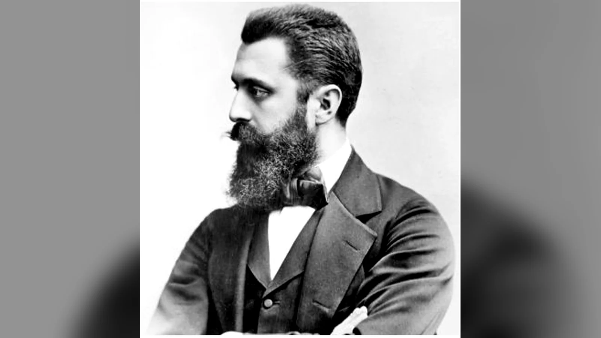
Meşhur anlatıda Herzl padişahın karşısına çıkar, “borçlarınızı ödeyelim, Filistin’i bize verin” der; Abdülhamid de “Kanla alınan toprak ancak kanla verilir” anlamındaki uzun ve etkileyici konuşmayı yaparak onu kovar. Abdülhamid’in Filistin’de siyasi bir Siyonist yapılanmaya izin vermediği tarihsel olarak savunulabilir. Fakat internette padişaha atfedilen uzun Türkçe konuşmaların tamamını, toplantıda kelimesi kelimesine tutulmuş resmî zabıt gibi kullanmak güvenli değildir. Bazı meşhur ifadeler Herzl’in aktardığı aracılı mesajlardan ve sonraki yayınlardan türemiştir.
Üstelik Filistin’de Yahudilere arazi satışı tamamen durmuş değildi. Özel mülkiyet işlemleri, yabancıların hukuki statüsü ve yerel uygulamalar nedeniyle Yahudi bireyler ve kuruluşlar arazi edinebildiler. Bu, Osmanlı devletinin Filistin’in egemenliğini sattığı anlamına gelmez. “Hiçbir Yahudi tek metrekare toprak alamadı” iddiası da “Abdülhamid Filistin’i sattı” iddiası kadar hatalıdır.
En güvenli sonuç şu: Abdülhamid yönetimi Siyonist hareketin Filistin’de siyasi ayrıcalık elde etme girişimlerine onay vermedi ve göçü sınırlamaya çalıştı; fakat özel arazi alımları tamamen engellenemedi. Herzl padişahla gerçekten görüştü, ancak bugün sosyal medyada dolaşan dramatik diyalogların tamamı çağdaş resmî tutanakla doğrulanmış değildir.
Ermeni Olayları ve 1894–1896 Katliamları
Abdülhamid döneminin en ağır tarihsel dosyası 1894–1896 arasında Osmanlı Ermenilerine yönelik kitlesel şiddettir. Konuyu yalnız “Ermeni isyanları çıktı, devlet bastırdı” diye anlatmak, sivillere yönelik büyük ölçekli katliamları görünmez kılar. Bütün olayları tek merkezden yürütülen basit bir plan şemasına indirgemek de yerel aktörlerin, aşiretlerin, vergi ve toprak çatışmalarının rolünü siler.
1878 Berlin Antlaşması sonrasında Ermeni reformları uluslararası diplomasinin konusu olmuştu. Doğu vilayetlerinde vergi yükü, toprak anlaşmazlıkları, Kürt aşiretleriyle çatışmalar ve devlet otoritesinin niteliği uzun süredir gerilim yaratıyordu. Hınçak ve Taşnak gibi Ermeni devrimci örgütleri de reform, özerklik ve farklı siyasi hedeflerle örgütlenmeye başladı. Bazı grupların silahlı eylemleri devletin güvenlik söylemini sertleştirdi.
1894 Sasun olaylarıyla başlayan kriz, 1895-1896’da birçok şehirde Ermeni sivillerin öldürüldüğü geniş çaplı şiddete dönüştü. Devlet güçleri, yerel Müslüman topluluklar ve bazı aşiret birlikleri olaylarda rol oynadı. Can kaybı için kaynaklarda çok farklı rakamlar verilir; on binlerle yüz binler arasında değişen tahminler vardır. Bu nedenle tek bir kesin sayı vermek yerine tahminlerin kaynağını belirtmek gerekir.
Modern akademik literatür bu olayları yaygın biçimde “Hamidiye katliamları” olarak adlandırır. Robert Melson ve daha yakın tarihli çalışmalar, on binlerce Ermeninin öldürüldüğünü ve şiddetin devlet politikasıyla ilişkisini vurgular. Jelle Verheij’in kapsamlı çalışması, olayların her birini ve farklı idari düzeylerin rolünü ayrı ayrı inceleyerek eski iki kutuplu “tamamen devlet planı” ve “yalnız Ermeni isyanı” anlatılarının ötesine geçmeye çalışır. Nadir Özbek ise vergi düzeni ve yerel idarenin gündelik uygulamalarının şiddet ortamını nasıl hazırladığını gösterir.
Hamidiye Alayları da bu bağlamın parçasıdır. Büyük ölçüde Kürt aşiretlerinden oluşturulan bu süvari birlikleri doğu sınırında askerî kapasite ve aşiretleri devlete bağlama amacı taşıyordu. Bazı birliklerin Ermeni köylülerine yönelik şiddet, yağma ve toprak gaspında rol oynadığı belgelenmiştir. Her Kürt aşiretini veya bütün Hamidiye mensuplarını aynı davranışla özdeşleştirmek ise tarihsel çeşitliliği yok eder.
Abdülhamid’in sorumluluğunu yalnız “her öldürme emrini şahsen imzaladı mı?” sorusuna indirgemek de yanıltıcıdır. O, son derece merkezileşmiş sistemin hükümdarıydı; reform taleplerine karşı güvenlikçi siyaseti destekledi ve kitlesel şiddeti durduracak etkili bir müdahale gerçekleştirmedi. Bazı modern çalışmalar merkezî yönetimin şiddetin örgütlenmesindeki rolünü daha doğrudan vurgular. Bu nedenle olayları padişahtan tamamen bağımsız “yerel kargaşa” olarak göstermek mevcut akademik literatürle uyuşmaz.
“Kızıl Sultan” imgesi Avrupa kamuoyunda özellikle bu katliamların ardından güçlendi. William Gladstone gibi isimler Abdülhamid’i sert biçimde hedef aldı. Avrupa basınındaki söylemin kendi emperyal siyasetinden bağımsız olmadığı doğrudur; fakat propaganda unsurlarının bulunması katliamların gerçekleşmediği anlamına gelmez.
1915 olaylarını doğrudan 1894–1896’ya eşitlemek de kronolojiyi bozar. İki şiddet dönemi arasında devamlılık tartışmaları vardır, fakat farklı siyasi yönetimler ve savaş koşulları söz konusudur. 1890’lardaki katliamlar kendi tarihsel bağlamında incelenmelidir.
Yıldız Suikastı: Abdülhamid Nasıl Kurtuldu?
21 Temmuz 1905’te Ermeni Devrimci Federasyonu mensupları Yıldız Camii’ndeki cuma selamlığı çıkışında Abdülhamid’e yönelik bombalı suikast düzenledi. Zaman ayarlı patlayıcı bir araca yerleştirilmişti. Padişahın camiden çıkışının birkaç dakika gecikmesi nedeniyle bomba o aracına ulaşmadan patladı.
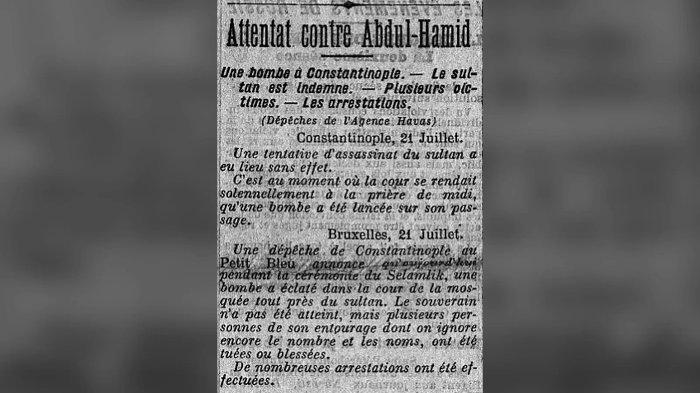
Patlama çok sayıda kişinin ölümüne ve yaralanmasına yol açtı. Abdülhamid suikasttan yara almadan kurtuldu. Olayın ardından geniş çaplı soruşturma yürütüldü. Belçikalı anarşist Edward Joris’in davadaki rolü, olayın uluslararası boyutunu da gündeme getirdi.
Tevfik Fikret, suikastın başarısız olmasını eleştiren “Bir Lahza-i Teahhur” şiirini yazdı. Bu metin, Abdülhamid dönemindeki siyasi kutuplaşmanın ne kadar sertleştiğini gösteren çarpıcı belgelerden biridir. Padişahı kutsayan sonraki anlatılar kadar, onun ölümünü arzulayan çağdaş muhalefetin dili de dönemin siyasi atmosferinin parçasıdır.
II. Meşrutiyet Neden Yeniden İlan Edildi?
1900’lerin başında Jön Türk muhalefeti özellikle Rumeli’deki subaylar arasında güç kazandı. İttihat ve Terakki Cemiyeti, anayasanın yeniden yürürlüğe girmesini temel hedef hâline getirdi. Makedonya’daki milliyetçi çatışmalar ve Avrupa devletlerinin bölgeye müdahale ihtimali genç subayların devletin parçalanmakta olduğu düşüncesini güçlendiriyordu.
1908’de Reval’de Britanya Kralı VII. Edward ile Rus Çarı II. Nikolay’ın görüşmesi, Osmanlı kamuoyunda Makedonya’nın geleceğinin büyük devletlerce paylaşılacağı korkusunu artırdı. İttihatçı subaylar dağa çıktı; Niyazi Bey ve Enver Bey gibi isimlerin hareketleri Rumeli’de hızla yayıldı. Sarayın askerî müdahaleyle kontrolü yeniden sağlaması giderek zorlaştı.
23-24 Temmuz 1908’de Abdülhamid Kanun-ı Esasi’nin yeniden uygulanmasını ve seçimlerin yapılmasını kabul etti. İstanbul’da ve imparatorluğun birçok şehrinde büyük kutlamalar düzenlendi. Bu kararı “padişah zaten meşrutiyet istiyordu ve halka özgürlüğü kendisi verdi” diye anlatmak, otuz yıllık parlamentosuz yönetimi göz ardı eder. “Bir telgraf gelince hemen teslim oldu” demek de Rumeli’deki askerî ve siyasi örgütlenmenin boyutunu küçümser.
Yeni dönemde Abdülhamid hemen sembolik bir hükümdara dönüşmedi. Saray ile İttihatçı çevreler arasında güç mücadelesi sürdü. Basının serbestleşmesi, siyasi partilerin ortaya çıkması ve eski rejimle hesaplaşma toplumdaki gerilimleri de açığa çıkardı. Bir yıl sonra 31 Mart Vakası bu kırılgan ortamda meydana geldi.
II. Abdülhamid 31 Mart Vakası’nı Çıkardı mı?
31 Mart Vakası, Rumi takvime göre 31 Mart 1325, Miladi takvime göre 13 Nisan 1909’da İstanbul’da başlayan askerî isyandır. Bazı Avcı Taburları askerleri subaylarına karşı ayaklandı; kısa sürede medrese öğrencileri, dinî sloganlar kullanan gruplar ve İttihat ve Terakki karşıtları olaylara katıldı. Bazı subaylar ve milletvekilleri öldürüldü.
İsyanın talepleri tek bir programa sahip değildi. “Şeriat isteriz” sloganı öne çıkarken askerî disiplin sorunları, İttihatçı subaylara tepki, siyasi iktidar mücadelesi ve dönemin basın ortamı birbirine karışmıştı. İttihat ve Terakki’nin Selanik’teki gücü olaylara karşı Hareket Ordusu’nun kurulmasını sağladı. Mahmud Şevket Paşa’nın komutasındaki kuvvetler İstanbul’a girerek isyanı bastırdı.
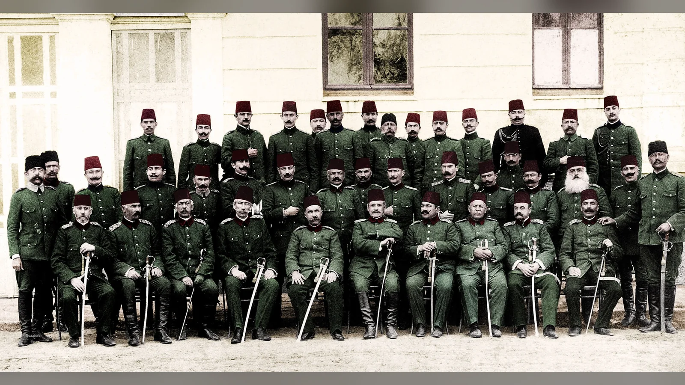
Abdülhamid’in isyanı bizzat planladığı iddiası daha olayın hemen ardından ortaya çıktı. İttihatçı çevreler eski rejimin geri dönmek için ayaklanmayı kullandığını savundu. Buna karşılık padişahın isyanı önceden hazırladığına veya doğrudan başlatma emri verdiğine dair tartışmayı kesin biçimde kapatan bir belge bulunmamaktadır. Victor R. Swenson’ın klasik çalışması da komplo tezinin tarih yazımındaki tartışmalı niteliğine dikkat çeker.
Bu, Abdülhamid’in olaylardan tamamen bağımsız olduğunu otomatik olarak kanıtlamaz. Sarayın isyan sırasında aldığı tavır, isyancılara karşı neden daha erken güç kullanılmadığı ve eski rejim yanlısı çevrelerle bağlantılar tarihçilerin tartıştığı konulardır. En güvenli ifade, 31 Mart’ın yalnız padişahın gizli emriyle açıklanamayacak çok aktörlü bir isyan olduğu ve Abdülhamid’in doğrudan organizatörlüğünün kesin kanıtlanmadığıdır.
II. Abdülhamid Neden Tahttan İndirildi?
Hareket Ordusu İstanbul’u kontrol altına aldıktan sonra Abdülhamid’in siyasi konumu sürdürülemez hâle geldi. Meclis 27 Nisan 1909’da padişahın tahttan indirilmesine karar verdi. Karar için fetva alındı ve yerine kardeşi Mehmed Reşad, V. Mehmed adıyla tahta çıkarıldı.
Tahttan indirme kararını yalnız “31 Mart’ın cezası” diye açıklamak eksiktir. 1908’den beri İttihat ve Terakki ile saray arasındaki güvensizlik, eski rejimin geri dönebileceği korkusu ve İstanbul’daki isyanın yarattığı kriz birlikte etkiliydi. 31 Mart, zaten var olan iktidar mücadelesini padişah aleyhine sonuçlandıran kırılma oldu.
Kararı Abdülhamid’e bildiren heyette Âyan ve Mebusan Meclisi üyeleri bulunuyordu.
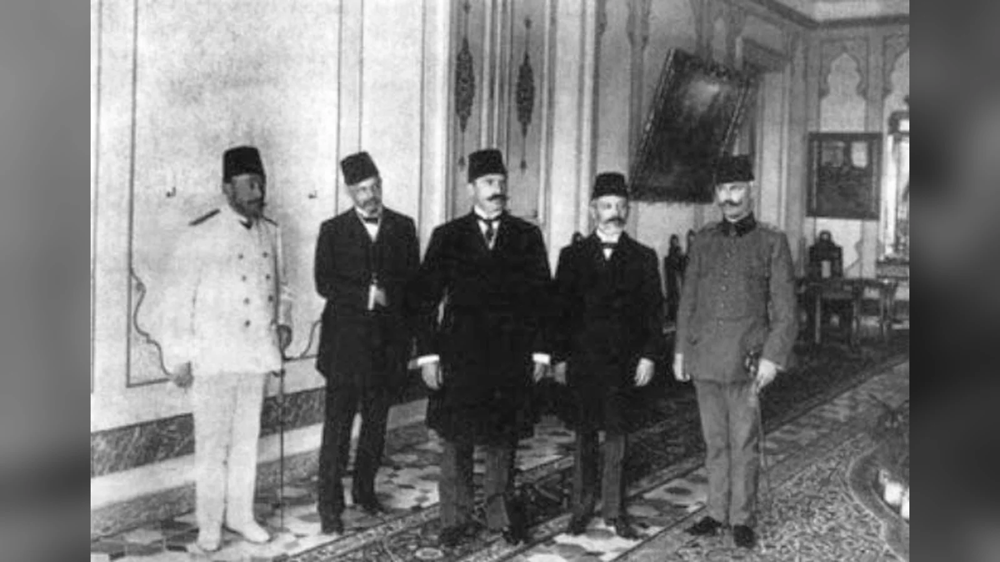
Heyetin üyelerinden Emanuel Karasu’nun Yahudi olması, sonraki komplo teorilerinde olayın “Siyonist intikamı” olarak anlatılmasına yol açtı. Oysa dört kişilik heyetin bir üyesinin kimliğinden hareketle parlamentonun ve Hareket Ordusu’nun kararını tek bir etnik-dinî komploya dönüştürmek tarihsel süreci açıklamaz.
Abdülhamid Selanik’e gönderildi ve Alatini Köşkü’nde tutuldu. 1912 Balkan Savaşı sırasında Selanik’in kaybedilme ihtimali ortaya çıkınca İstanbul’a getirildi. Hayatının geri kalanını Beylerbeyi Sarayı’nda geçirdi.
II. Abdülhamid Nasıl Öldü?
Abdülhamid 10 Şubat 1918’de Beylerbeyi Sarayı’nda öldü. Yetmiş beş yaşındaydı. Cenazesi İstanbul’da Divanyolu’ndaki Sultan II. Mahmud Türbesi’ne defnedildi; burada Sultan Abdülaziz ve başka hanedan üyelerinin mezarları da bulunur.
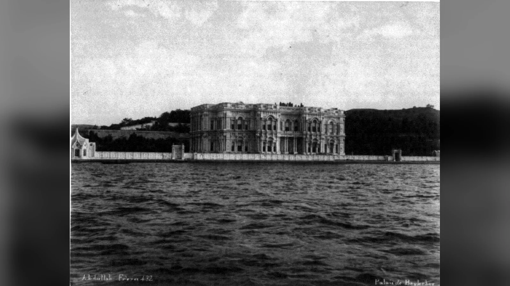
Tahttan indirildikten sonra yaklaşık dokuz yıl daha yaşaması, popüler anlatılarda bazen unutulur. I. Dünya Savaşı’nın büyük bölümünü gördü; imparatorluk onun ölümünden yalnız birkaç yıl sonra sona erdi. Son yıllarında aktif siyasi iktidarı yoktu, ancak eski padişah olarak gelişmeleri takip ettiği aile hatıratlarında anlatılır.
Kızı Ayşe Osmanoğlu’nun hatıraları saray içi günlük hayat ve babasının son yılları için değerli bir kaynaktır. Bununla birlikte bir kızın babası hakkında yazdığı anıları tarafsız devlet tutanağı gibi kullanmamak gerekir. Aynı kural Tahsin Paşa’nın hatıratı, Jön Türk anıları ve yabancı diplomat raporları için de geçerlidir.
II. Abdülhamid’in Ailesi, Eşleri ve Çocukları
Abdülhamid çok eşli Osmanlı saray geleneği içinde geniş bir aileye sahipti. Eşleri arasında Nâzikedâ, Bedrifelek, Bidar, Dilpesend, Mezîde, Emsalinur, Müşfika ve Saliha Naciye gibi isimler kaynaklarda yer alır. Eşlerin unvanları ve saraydaki sıralamaları zaman içinde değişebildiği için internetteki listeler birbirinden farklı olabilir.
On yedi çocuğu olduğu genel kabul görür; bunların sekizi erkek, dokuzu kızdır. Şehzade Mehmed Selim, Şehzade Abdülkadir, Şehzade Ahmed Nuri, Şehzade Mehmed Burhaneddin, Ayşe Sultan, Naime Sultan, Şadiye Sultan ve Zekiye Sultan öne çıkan çocukları arasındadır. Bazı çocukları küçük yaşta öldü.
Payitaht Abdülhamid dizisinde saray ailesi dramatik hikâyenin merkezindedir. Tarihsel kişilerin var olması, ekrandaki özel konuşmaların ve aile içi çatışmaların belgeye dayandığı anlamına gelmez. Saray hatıratları günlük yaşama ilişkin ipuçları verir, fakat senaryo gereği kurulmuş diyaloglar doğal olarak tarihsel kayıt değildir.
Payitaht Abdülhamid Dizisi Gerçek mi?
Payitaht Abdülhamid gerçek tarihî kişileri ve olayları kullanır, fakat bir belgesel değildir. Dizinin diyalogları, karşılaşmaları, gizli operasyonları ve olayların birbirine bağlanma biçimi dramatik kurguya göre düzenlenmiştir. Tarihsel gerçeklik açısından en büyük hata, dizide gerçek bir kişinin adını görmekle o kişinin ekrandaki bütün davranışlarını tarihsel bilgi kabul etmektir.
Dizi 1896’dan başlayarak Abdülhamid’in saltanatının son dönemlerini merkezine alır. Tahsin Paşa, Bidar Kadın, Theodor Herzl ve çeşitli Osmanlı devlet adamları gerçekten yaşamış kişilerdir. Fakat onların özel konuşmalarının büyük bölümü doğal olarak senaryodur. Tarihî dramada gerçek karakter ile gerçek diyalog aynı şey değildir.
Tahsin Paşa gerçekten Abdülhamid’in yakın saray görevlilerinden ve mâbeyn başkâtiplerinden biriydi. Hatıratı padişahın yönetim tarzına ilişkin önemli bilgiler içerir. Dizideki sadık yardımcı karakterinin tarihsel bir temeli bulunmakla birlikte, her gizli operasyonu yöneten ve her dramatik olayın yanında bulunan ekran kişiliği birebir biyografisi sayılamaz.
Bidar Kadın da tarihsel kişidir ve Abdülhamid’in eşlerinden biridir. Dizideki aile içi olayların, özel tartışmaların ve konuşmaların belgeyle doğrulanmış olduğunu varsaymak mümkün değildir. Saray yaşamı hakkında Ayşe Osmanoğlu gibi aile üyelerinin hatıratları vardır; yine de bunlar senaryodaki her sahnenin kaynağı değildir.
Herzl örneği dizinin tarih ile drama arasındaki farkını özellikle iyi gösterir. Herzl gerçekten Osmanlı yönetimiyle temas kurdu ve 1901’de Abdülhamid tarafından kabul edildi. Siyonist siyasi hedefleri de gerçektir. Fakat bir televizyon dizisi bu uzun diplomatik süreci yüz yüze hesaplaşmalar, komplolar ve keskin diyaloglarla yoğunlaştırabilir. Tarihçi ise hangi görüşmenin ne zaman yapıldığını, hangi teklifin aracı üzerinden iletildiğini ve hangi sözün hangi kaynaktan geldiğini ayrı ayrı sormak zorundadır.
Dizide Abdülhamid’in devletin her gizli operasyonunu ayrıntısıyla yöneten, düşmanlarının planlarını sürekli önceden çözen bir hükümdar olarak gösterilmesi de dramatik kahraman inşasının parçasıdır. Tarihsel Abdülhamid istihbarata olağanüstü önem veriyordu; fakat elindeki bilgi kusursuz değildi ve yönetimi birçok krizi önleyemedi. 1905 suikastı, 1908 devrimi ve 1909 isyanı bunun en açık örnekleridir.
Aynı biçimde dizideki iyi-kötü ayrımı tarihsel siyasetten daha keskindir. Osmanlı bürokratları, Avrupalı diplomatlar, muhalifler ve saray çevreleri tek bir “vatanseverler ve hainler” çizgisinde hareket etmiyordu. Devlet adamlarının kendi siyasi programları, büyük devletlerin birbirleriyle rekabet eden çıkarları ve Osmanlı toplumunun farklı talepleri vardı.
| Dizideki anlatı | Tarihsel kayıtlarda durum | Değerlendirme |
|---|---|---|
| Abdülhamid devletin gizli operasyonlarını doğrudan ve ayrıntılı biçimde yönetir | Padişah istihbarat ve jurnallere büyük önem veriyordu; sistem modern tek merkezli gizli servis değildi | Tarihsel temelden dramatik genişletme |
| Tahsin Paşa padişahın en yakın yardımcılarındandır | Tahsin Paşa gerçekten mâbeyn başkâtibi ve Abdülhamid’e yakın bir devlet görevlisiydi | Kişi gerçek, özel sahnelerin çoğu kurgu |
| Bidar Kadın saray ailesinin merkezindedir | Bidar Kadın Abdülhamid’in gerçek eşlerinden biridir | Kişi gerçek, diyalog ve özel çatışmalar senaryo |
| Herzl Abdülhamid’le karşı karşıya gelir | Herzl Mayıs 1901’de Gör padişah tarafından gerçekten kabul edildi | üşme gerçek; dramatik diyaloglar belge değildir |
| Abdülhamid düşman komplolarını sürekli önceden çözer | Geniş bilgi ağına rağmen rejim suikast, devrim ve isyanlarla karşılaştı | Kahraman merkezli dramatizasyon |
| Siyasi mücadele vatanseverler ile hainler arasında keskinleşir | Dönemin aktörleri farklı ideolojik, diplomatik ve kişisel hedeflere sahipti | Televizyon anlatısının sadeleştirmesi |
Diziyi tarih öğrenmenin başlangıç noktası olarak görmek mümkündür; son noktası olarak değil. Yapımın tarihsel dekoru ve gerçek isimleri kullanması, senaryoyu birincil kaynak hâline getirmez. Antik Bilge açısından asıl ilginç olan da burada başlıyor: dizi ile belge arasındaki fark, tarihî dramanın nasıl çalıştığını görme fırsatı verir.
Ulu Hakan mı, Kızıl Sultan mı?
“Kızıl Sultan” imgesi Abdülhamid’in kendi döneminde, özellikle 1894–1896 Ermeni katliamlarının ardından Avrupa basını ve siyasi çevrelerinde güçlendi. Fransızca sultan rouge ve İngilizce Red Sultan ifadeleri, hükümdarı kitlesel şiddetin sorumlusu olarak hedef alan kampanyaların parçasıydı. Jön Türk muhalefeti de padişahı istibdat rejiminin simgesi hâline getirdi.
“Ulu Hakan” ise çok daha sonraki hafıza siyasetinin güçlü ifadesidir. Abdülhamid’e olumlu yaklaşan yayınlar daha erken tarihlerde de vardı; fakat Necip Fazıl Kısakürek’in 1965’te yayımlanan Ulu Hakan II. Abdülhamid Han kitabı bu ifadenin geniş kitlelerde yerleşmesinde özel bir rol oynadı. Bu anlatıda padişah, dış güçlerin ve içerdeki hainlerin kuşattığı fakat devleti zekâsıyla ayakta tutan hükümdar olarak öne çıkar.
İki sıfat da tarihsel kişiyi tek bir ahlaki hükme sıkıştırır. “Kızıl Sultan” dendiğinde eğitim, altyapı, diplomasi ve devlet inşası arka plana itilebilir. “Ulu Hakan” dendiğinde meclisin kapatılması, sansür, sürgünler ve Ermeni sivillere yönelik kitlesel şiddet kolayca savunma refleksiyle açıklanabilir. Akademik tarihçilik için ikisi de araştırmanın sonucu değil, araştırılması gereken tarihsel hafıza nesneleridir.
Bu kutuplaşmanın uzun ömürlü olmasının nedeni Abdülhamid’in yalnız geçmişte kalmış bir hükümdar olmamasıdır. Türkiye’de devletin merkezî gücü, Batı’yla ilişkiler, İslam ve siyaset, güvenlik-özgürlük dengesi gibi güncel tartışmalar geçmişe yansıtıldığında Abdülhamid kolayca sembole dönüşür. Her kuşak kendi siyasi sorularına onun üzerinden cevap arar.
Payitaht Abdülhamid bu hafızanın en etkili modern üretimlerinden biridir. Dizinin tarihsel olayları güncel izleyicinin anlayacağı siyasi çatışma kalıplarıyla anlatması, gerçek hükümdarla ekran karakterinin zamanla birbirine karışmasına yol açtı. Bu nedenle “gerçek mi, dizi mi?” sorusu basit bir televizyon eleştirisi değil, tarihsel hafızanın nasıl üretildiği sorusudur.
II. Abdülhamid’in Mirası Nasıl Değerlendirilmeli?
Abdülhamid, çözülmekte olan imparatorluğu otuz yılı aşkın süre tek başına “kurtaran” hükümdar değildi; imparatorluk onun saltanatında da toprak kaybetti, mali bağımlılık sürdü ve milliyetçi hareketler büyüdü. Fakat onu yalnız çöküşün sorumlusu saymak da aynı derecede sorunludur. Tahta çıktığında mali iflas, Balkan krizi, büyük devlet müdahaleleri ve yaklaşan Rus savaşı zaten devletin önündeydi.
Onun yönetiminin belirgin özelliği, modern devlet kapasitesini artırırken siyasi karar alma alanını daraltmasıydı. Daha fazla okul, daha hızlı telgraf, daha uzun demiryolu ve daha düzenli bürokratik bilgi akışı devletin topluma ulaşmasını kolaylaştırdı. Aynı araçlar müfredatı denetlemek, muhalefeti izlemek ve merkezi otoriteyi güçlendirmek için de kullanılabiliyordu.
Bu nedenle “modernleşmeci mi, otoriter mi?” sorusu yanlış bir ikilik kurar. 19. yüzyılın birçok devletinde olduğu gibi Osmanlı’da da modernleşme demokratikleşmeyle aynı şey değildi. Abdülhamid yeni teknolojileri ve kurumları kullanırken parlamenter siyaseti otuz yıl askıya alabildi. Onun rejimini ilginç kılan tam da bu birlikteliktir.
Dış politikada da benzer bir tablo vardır. 1878 felaketinden sonra Rusya, Britanya, Fransa ve Avusturya-Macaristan arasında denge kurmaya çalıştı; Almanya ile yakınlık giderek arttı. Büyük bir Avrupa savaşından kaçınmak önemli başarıydı. Buna rağmen Tunus’un Fransız, Mısır’ın Britanya kontrolüne girmesi ve Balkanlardaki çözülme engellenemedi. Denge siyaseti zaman kazandırdı; imparatorluğun yapısal sorunlarını ortadan kaldırmadı.
Filistin meselesi onun sonraki imgesinin nasıl üretildiğini açıkça gösterir. Siyonist siyasi taleplere direnmesi tarihsel bir olgudur. Bu gerçek zamanla, her cümlesi kaydedilmiş destansı bir Herzl-Abdülhamid düellosuna dönüştürüldüğünde tarih yerini menkıbeye bırakır. Aynı şey istihbarat ağı için de geçerlidir: geniş bir gözetim sistemi gerçektir; her komplodan önceden haberdar olan kusursuz hükümdar ise dramatik karakterdir.
Ermeni katliamları ise olumlu miras anlatılarının en zor sınavıdır. Eğitim ve demiryolu yatırımlarını anlatmak bu şiddeti silmez; kitlesel şiddeti anlatmak da dönemin bütün kurumsal dönüşümünü yok saymayı gerektirmez. Aynı hükümdarlık döneminde ikisi birden gerçekleşti. Tarihsel değerlendirme, hoşumuza giden belgeleri seçmek yerine aynı kanıt standardını bütün dosyalara uyguladığında anlam kazanır.
Abdülhamid’in otuz yılı aşkın saltanatı sonunda onu deviren kuşağın önemli bir kısmı da onun döneminde açılan modern okullarda yetişmişti. Bu, dönemin en dikkat çekici tarihsel ironilerinden biridir. Merkezî devleti güçlendirmek için genişletilen eğitim sistemi, yeni bir bürokrat ve subay kuşağı üretti; bu kuşağın bir bölümü sarayın merkezî yönetimine karşı anayasal siyaset talep etti. Modernleşme, iktidarın kontrol edebileceği tek yönlü bir süreç değildi.
Gerçek II. Abdülhamid bu yüzden ne dizideki yenilmez satranç ustasına ne de bütün Osmanlı çöküşünü tek başına hazırlayan karikatür bir despota benzer. Güvenlik kaygıları gerçek olan fakat bu kaygıları geniş bir sansür ve gözetim düzenine dönüştüren; modern devlet kurumlarını büyüten fakat parlamentoyu kapatan; dış müdahaleler arasında denge arayan fakat önemli toprak kayıplarını önleyemeyen; halifelik ve İslam birliği söylemini güçlendiren fakat çok dinli bir imparatorluğu yönetmeye devam eden bir hükümdardı.
Onu “Ulu Hakan mı, Kızıl Sultan mı?” sorusuna tek kelimelik cevapla yerleştirmek kolaydır. Daha zor ve daha tarihsel olan, aynı hükümdarın neden iki zıt imgeyi de besleyebilecek kadar güçlü ve çelişkili bir miras bıraktığını anlamaktır.
Sıkça Sorulan Sorular
II. Abdülhamid kimdir?
II. Abdülhamid, Sultan Abdülmecid’in oğlu ve Osmanlı Devleti’nin 34. padişahıdır. 1842’de İstanbul’da doğdu, 1876’da tahta çıktı ve 1909’da tahttan indirildi. Saltanatı sırasında Kanun-ı Esasi ilan edildi, ardından parlamento yaklaşık otuz yıl kapalı kaldı. Eğitim, demiryolu, telgraf ve sosyal kurumlar genişlerken basın sansürü ve siyasi gözetim de güçlendi. 1877-1878 Osmanlı-Rus Savaşı ve sonrasındaki büyük toprak kayıpları, Ermeni katliamları, Jön Türk muhalefeti ve II. Meşrutiyet döneminin temel gelişmeleridir.
II. Abdülhamid kaç yıl tahtta kaldı?
31 Ağustos 1876’da tahta çıktı ve 27 Nisan 1909’da indirildi. Bu süre yaklaşık 32 yıl 8 aydır. Buna rağmen tarih yazımında ve günlük dilde saltanatı genellikle “33 yıl” diye yuvarlanarak ifade edilir. Osmanlı hanedanının en uzun saltanatlarından biridir. Bu uzun dönemin tamamı aynı yönetim şartlarında geçmedi: 1876-1878 arasında anayasal parlamenter deneyim yaşandı, 1878-1908 arasında parlamento kapalı kaldı, 1908’den tahttan indirilmesine kadar ise II. Meşrutiyet düzeni yeniden yürürlükteydi.
II. Abdülhamid neden tahttan indirildi?
1908’de II. Meşrutiyet’in yeniden ilanından sonra saray ile İttihat ve Terakki arasındaki siyasi mücadele sürdü. 13 Nisan 1909’daki 31 Mart Vakası İstanbul’da ciddi bir rejim krizine yol açtı. Selanik’ten gelen Hareket Ordusu isyanı bastırdıktan sonra Meclis 27 Nisan’da Abdülhamid’in tahttan indirilmesine karar verdi ve fetva alındı. Karar yalnız tek bir olayın sonucu değildi; eski rejimin geri dönebileceği korkusu, İttihatçıların yükselişi ve padişaha yönelik siyasi güvensizlik de belirleyiciydi.
II. Abdülhamid meclisi neden kapattı?
Meclis, 1877-1878 Osmanlı-Rus Savaşı sırasında hükümet ve savaş yönetimi konusunda sert tartışmaların yaşandığı ortamda 13 Şubat 1878’de padişah tarafından tatil edildi. Abdülhamid savaş krizini ve meclisteki gerilimleri gerekçe gösterdi; fakat parlamento savaş bittikten sonra da yeniden açılmadı. Kanun-ı Esasi resmen tamamen kaldırılmadı, buna karşılık temsilî sistem yaklaşık otuz yıl işlemedi. Bu nedenle karar hem savaşın olağanüstü koşulları hem de padişahın iktidarı Yıldız Sarayı çevresinde merkezileştiren yönetim anlayışıyla birlikte değerlendirilmelidir.
II. Abdülhamid döneminde Osmanlı toprak kaybetti mi?
Evet. Berlin Antlaşması sonrasında Sırbistan, Karadağ ve Romanya’nın bağımsızlığı tanındı; Kars, Ardahan ve Batum Rusya’ya bırakıldı. Bosna-Hersek Avusturya-Macaristan tarafından işgal edildi, Kıbrıs Britanya yönetimine geçti. Tunus 1881’de Fransa, Mısır 1882’de Britanya tarafından işgal edildi. Girit’te Osmanlı fiilî kontrolü zayıfladı. Bu bölgelerin hukuki statüleri aynı değildi; bağımsızlık, ilhak, işgal ve özerklik birbirinden ayrılmalıdır. Dolayısıyla “tek karış toprak kaybetmedi” sözü doğru değildir.
II. Abdülhamid Filistin’i sattı mı?
Hayır. Filistin’in siyasi egemenliği Abdülhamid tarafından Siyonist harekete satılmadı. Osmanlı yönetimi özellikle Filistin’e yoğun Yahudi göçünü ve siyasi bir yerleşim projesini sınırlamaya çalıştı. Bununla birlikte özel kişiler ve kuruluşlar çeşitli yollarla arazi satın alabildi; “tek metrekare bile satılmadı” iddiası da doğru değildir. Arazi mülkiyeti ile devlet egemenliğinin devri farklı şeylerdir. Abdülhamid’in Siyonist siyasi talepleri kabul etmemesi tarihsel olarak desteklenirken, ona atfedilen bütün dramatik sözler aynı belge gücüne sahip değildir.
II. Abdülhamid ile Theodor Herzl görüştü mü?
Evet. Herzl Mayıs 1901’de Yıldız Sarayı’nda II. Abdülhamid tarafından kabul edildi. Bu nedenle “hiç yüz yüze görüşmediler” iddiası doğru değildir. Herzl Osmanlı borçlarının hafifletilmesine yardım edecek mali projeler karşılığında Yahudiler lehine siyasi ayrıcalık elde etmeye çalışıyordu ve Filistin merkezli Siyonist hedefleri vardı. Abdülhamid bu siyasi projeye onay vermedi. Ancak sosyal medyada ve dizilerde aktarılan uzun karşılıklı konuşmaların tamamını resmî toplantı tutanağı gibi kabul etmek doğru değildir.
Payitaht Abdülhamid dizisi gerçek mi?
Dizi gerçek tarihî kişilerden ve olaylardan yararlanır, ancak belgesel değildir. Tahsin Paşa, Bidar Kadın ve Theodor Herzl gibi birçok kişi gerçekten yaşamıştır; 1901 Herzl görüşmesi, Yıldız suikastı ve dönemin siyasi krizleri gibi olayların tarihsel temeli vardır. Buna karşılık özel diyaloglar, gizli operasyonlar, yüzleşmeler ve bazı olayların birbirine bağlanma biçimi senaryo gereği dramatize edilmiştir. Dizide bir karakterin gerçek olması, onun ekranda söylediği her sözün tarihsel kayıtlarda bulunduğu anlamına gelmez.
II. Abdülhamid 31 Mart Vakası’nı çıkardı mı?
Abdülhamid’in 31 Mart Vakası’nı bizzat planladığını kesin biçimde gösteren tartışmasız bir belge yoktur. İsyan sırasında dinî talepler, askerî disiplin sorunları, İttihat ve Terakki karşıtlığı ve eski rejim yanlısı unsurlar bir araya geldi. Olayın hemen ardından padişah ve çevresi suçlandı; sonraki tarihçiler onun rolü konusunda farklı değerlendirmeler yaptı. Bu nedenle “kesin Abdülhamid çıkardı” demek de “olayla hiçbir ilişkisi olamazdı” demek de kanıtların izin verdiğinden daha kesin ifadelerdir.
II. Abdülhamid nasıl öldü?
Tahttan indirildikten sonra önce Selanik’te Alatini Köşkü’nde tutuldu. Balkan Savaşları sırasında İstanbul’a getirildi ve Beylerbeyi Sarayı’na yerleştirildi. 10 Şubat 1918’de burada, 75 yaşında öldü. Cenazesi İstanbul Divanyolu’ndaki Sultan II. Mahmud Türbesi’ne defnedildi. Böylece 1909’da sona eren saltanatından sonra yaklaşık dokuz yıl daha yaşadı ve I. Dünya Savaşı’nın büyük bölümüne tanıklık etti.
II. Abdülhamid’in kaç çocuğu vardı?
Genel kabul gören hanedan kayıtlarına göre II. Abdülhamid’in sekiz oğlu ve dokuz kızı olmak üzere on yedi çocuğu vardı. Çocuklarından bazıları küçük yaşta öldü. Ayşe Sultan, Şadiye Sultan, Naime Sultan, Zekiye Sultan, Şehzade Mehmed Selim ve Şehzade Abdülkadir en çok bilinenler arasındadır. Ayşe Osmanoğlu’nun daha sonra yayımlanan hatıratı, babasının saray hayatı ve aile ilişkileri hakkında önemli bilgiler verir; ancak aile hatıratı olması nedeniyle diğer kaynaklarla karşılaştırılarak kullanılmalıdır.
II. Abdülhamid Ulu Hakan mı, Kızıl Sultan mı?
İki ifade de tarafsız tarihsel unvan değildir. “Kızıl Sultan” özellikle 1894–1896 Ermeni katliamları sonrasında Avrupa basınında ve Abdülhamid karşıtı çevrelerde yaygınlaştı. “Ulu Hakan” ise padişahın olumlu ve kahramanlaştırılmış imgesini temsil eder; Türkiye’de özellikle Necip Fazıl Kısakürek’in eserleriyle güçlü bir popüler karşılık kazandı. Abdülhamid’in tarihsel mirası bu iki etiketten daha karmaşıktır: modernleşme ve merkezîleşme yatırımlarıyla sansür ve otoriter yönetim aynı saltanatın parçalarıdır.
Kaynakça
- Ayşe Osmanoğlu, Babam Sultan Abdülhamid. İstanbul: Selis Kitaplar, 2008. İlk yayımlanan hatırat metni 1950’lerde tefrika edilmiştir.
- François Georgeon, Abdülhamid II: Le sultan calife, 1876–1909. Paris: Fayard, 2003.
- François Georgeon, Sultan Abdülhamid. Çev. Ali Berktay. İstanbul: İletişim Yayınları, 2012.
- Selim Deringil, The Well-Protected Domains: Ideology and the Legitimation of Power in the Ottoman Empire, 1876–1909. London: I.B. Tauris, 1998.
- Selim Deringil, İktidarın Sembolleri ve İdeoloji: II. Abdülhamid Dönemi (1876–1909). Çev. Gül Çağalı Güven. İstanbul: Yapı Kredi Yayınları, 2002.
- M. Şükrü Hanioğlu, A Brief History of the Late Ottoman Empire. Princeton: Princeton University Press, 2008.
- Feroz Ahmad, The Young Turks: The Committee of Union and Progress in Turkish Politics, 1908–1914. Oxford: Clarendon Press, 1969.
- Engin Deniz Akarlı, “The Problems of External Pressures, Power Struggles, and Budgetary Deficits in Ottoman Politics under Abdülhamid II (1876–1909): Origins and Solutions.” Doktora tezi, Princeton University, 1976.
- Nadir Özbek, “The Politics of Taxation and the ‘Armenian Question’ during the Late Ottoman Empire, 1876-1908.” Comparative Studies in Society and History 54/4 (2012): 770-797.
- Robert Melson, “A Theoretical Inquiry into the Armenian Massacres of 1894–1896.” Comparative Studies in Society and History 24/3 (1982): 481-509.
- Jelle Verheij, Armenian Massacres of the Hamidian Period, 1894-1897: An Empirical Inquiry. Doktora tezi, University of Amsterdam, 2022.
- Bedross Der Matossian, “The Ottoman Massacres of Armenians, 1894–1896 and 1909.” İçinde The Cambridge World History of Genocide, Cilt 2. Cambridge: Cambridge University Press, 2023.
- Neville J. Mandel, “Ottoman Policy and Restrictions on Jewish Settlement in Palestine: 1881–1908: Part I.” Middle Eastern Studies 10/3 (1974): 312-332.
- Neville J. Mandel, The Arabs and Zionism before World War I. Berkeley: University of California Press, 1976.
- Theodor Herzl, The Complete Diaries of Theodor Herzl. Ed. Raphael Patai. New York: Herzl Press and Thomas Yoseloff, 1960.
- Tahsin Paşa, Abdülhamid ve Yıldız Hatıraları. İstanbul: Muallim Ahmet Halit Kitaphanesi, 1931.
- Cevdet Küçük, “Abdülhamid II.” TDV İslâm Ansiklopedisi, Cilt 1. İstanbul: TDV İslâm Araştırmaları Merkezi, 1988.
- Victor R. Swenson, “The Military Rising in Istanbul 1909.” Journal of Contemporary History 5/4 (1970): 171-184.
- Stanford J. Shaw ve Ezel Kural Shaw, History of the Ottoman Empire and Modern Turkey, Volume II: Reform, Revolution, and Republic. Cambridge: Cambridge University Press, 1977. Eser, geç Osmanlı siyasetine ilişkin tartışmalı yorumları nedeniyle diğer modern çalışmalarla karşılaştırılarak kullanılmalıdır.
- Library of Congress, Abdul-Hamid II Collection of Photographs of the Ottoman Empire, 1880-1893. https://www.loc.gov/collections/abdul-hamid-ii/
- Cevdet Küçük, “Abdülhamid II”, TDV İslâm Ansiklopedisi. https://islamansiklopedisi.org.tr/abdulhamid-ii